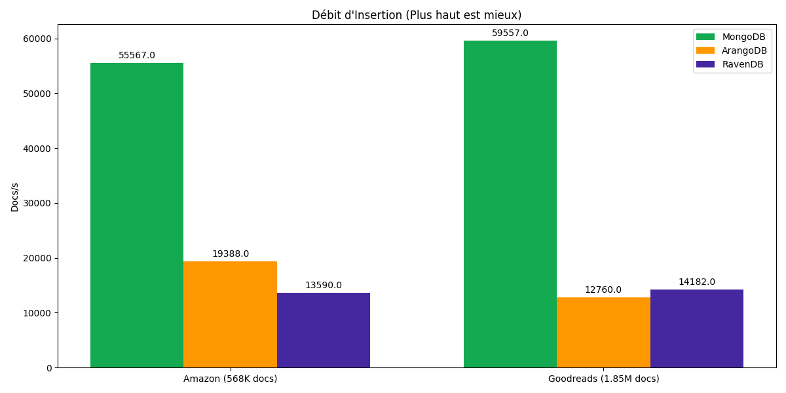
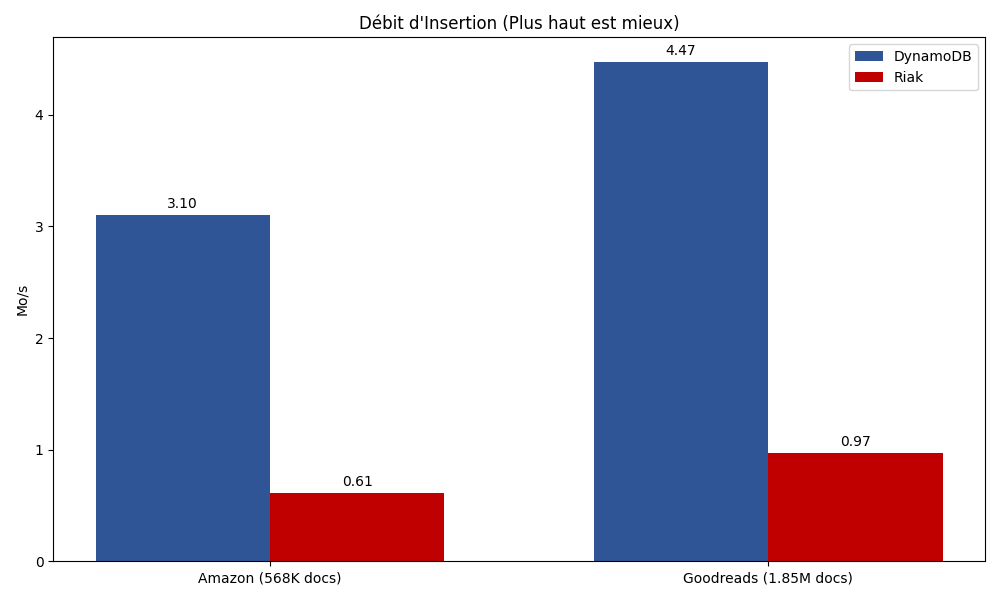
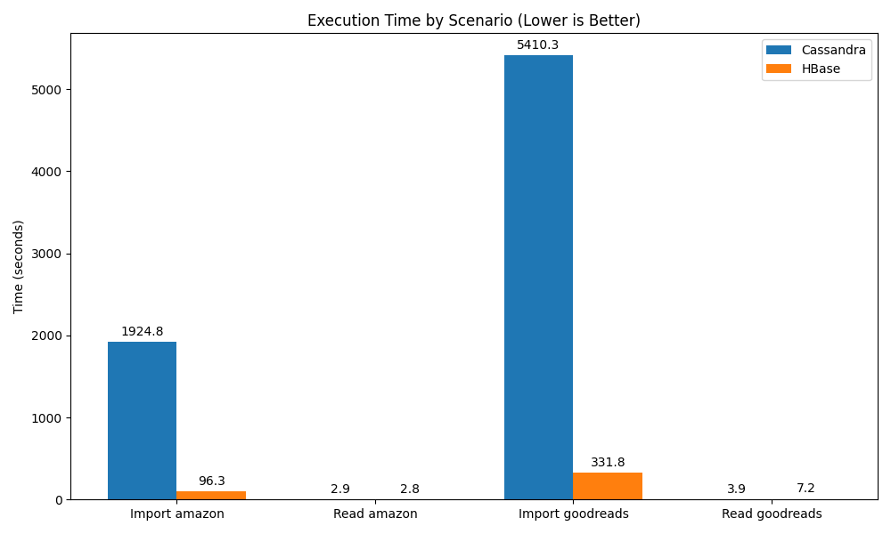
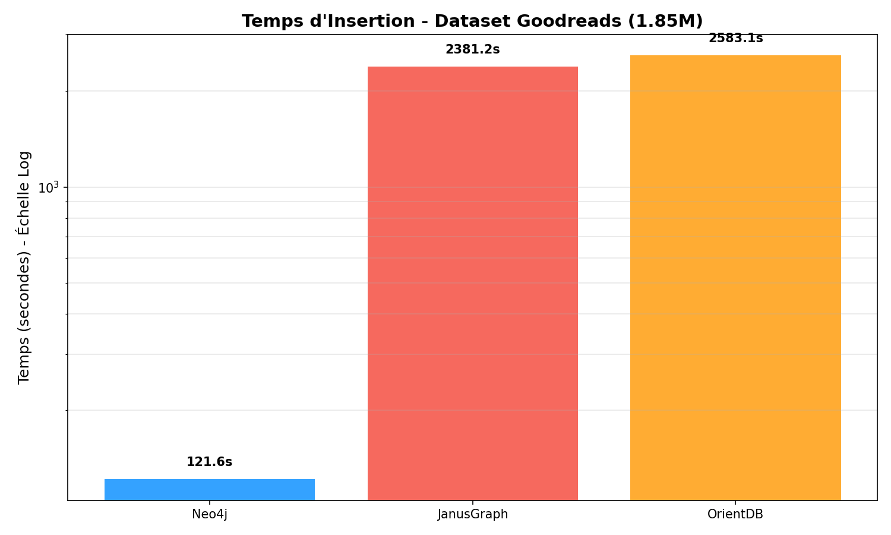

Synthèse Globale : Benchmark Multi-Modèle NoSQL
Comparaison des performances : Document vs Clé-Valeur vs Colonnes vs Graphe
1. Introduction Globale
Ce projet de benchmarking a pour objectif d'évaluer les performances et l'efficacité des différentes familles de bases de données NoSQL (Multi-Modèle) à travers 4 études de cas distinctes. Nous avons testé 11 bases de données sur des jeux de données réels (Amazon Reviews & Goodreads) pour comprendre leurs forces et leurs faiblesses respectives.
Le Spectre NoSQL Testé
- Orientée Documents : MongoDB vs ArangoDB vs RavenDB
- Clé-Valeur (Key-Value) : DynamoDB vs Riak KV
- Orientée Colonnes (Wide Column) : Apache Cassandra vs Apache HBase
- Orientée Graphe : Neo4j vs JanusGraph vs OrientDB
2. Environnement de Test
Tous les benchmarks ont été réalisés sur une machine unique afin de garantir une base de comparaison équitable.
- Matériel :
- CPU : AMD Ryzen 7 7735HS (8 Cœurs / 16 Threads) @ 3.2GHz
- RAM : 16 Go DDR5
- Stockage : SSD NVMe
- Logiciel :
- OS : Linux (Pop!_OS / Ubuntu)
- Conteneurisation : Docker & Docker Compose (Limites de ressources configurées par service)
- Langage de Script : Python 3.10+ (Drivers officiels ou recommandés)
3. Résumé par Famille de Base de Données
3.1. Bases Orientées Documents
- Cas d'usage : Stockage de données semi-structurées (JSON), flexibilité de schéma, requêtes complexes.
- Podium :
- MongoDB (Vainqueur incontesté : Performance brute et efficacité)
- ArangoDB (Bon second, polyvalent)
- RavenDB (En retrait sur ce workload spécifique)
Tableau Récapitulatif (Insertion Goodreads) :
| Base de Données |
Temps (s) |
Débit (docs/s) |
| MongoDB |
31.05s |
~59 500 |
| RavenDB |
130.39s |
~14 100 |
| ArangoDB |
144.93s |
~12 700 |

3.2. Bases Clé-Valeur (Key-Value)
- Cas d'usage : Accès ultra-rapide par clé primaire, cache, sessions utilisateur, paniers d'achat.
- Podium :
- DynamoDB (Local) (Excellente performance, faible CPU)
- Riak KV (Performant mais très gourmand en ressources CPU)
Tableau Récapitulatif (Insertion Goodreads) :
| Base de Données |
Temps (s) |
Débit (ops/s) |
CPU Moyen |
| DynamoDB |
400.2s |
~4 620 |
66-76% |
| Riak KV |
1846.1s |
~1 002 |
929-973% |

3.3. Bases Orientées Colonnes
- Cas d'usage : Séries temporelles, logs, écriture massive (Write Heavy), analytique sur grands volumes.
- Observations :
- HBase excelle en écriture (ingestion massive séquentielle).
- Cassandra est meilleure en lecture aléatoire et passage à l'échelle.
Tableau Récapitulatif (Insertion Goodreads) :
| Base de Données |
Temps (s) |
Analyse |
| HBase |
331.8s |
Ingestion massive très rapide via Thrift. |
| Cassandra |
5410.3s |
Lente sans tuning fin (Batching synchrone limitant). |

3.4. Bases Orientées Graphe
- Cas d'usage : Réseaux sociaux, recommandation, détection de fraude, gestion des dépendances.
- Podium :
- Neo4j (Leader absolu : Vitesse, Stockage natif, Cypher)
- JanusGraph (Distribué, mais lourd en RAM)
- OrientDB (Polyvalent, mais retrait sur l'insertion massive)
Tableau Récapitulatif (Insertion Goodreads) :
| Base de Données |
Temps (s) |
RAM Moyenne |
| Neo4j |
121.6s |
~0.8 Go |
| JanusGraph |
2381.2s |
~5.0 Go |
| OrientDB |
2583.1s |
~3.5 Go |

4. Conclusion Générale & Recommandations
Ce benchmark met en lumière qu'il n'y a pas de "base de données unique" pour tous les besoins. Chaque modèle excelle dans son domaine :
- Performance Pure (CRUD/JSON) : MongoDB reste le roi indétrônable pour les applications web classiques.
- Relations Complexes (Graphe) : Neo4j offre des performances de traversée et d'insertion inégalées pour les données connectées.
- Simplicité & Cache : DynamoDB est idéal pour les charges de travail clé-valeur simples et rapides.
- Big Data / Séries Temporelles : HBase (pour l'écriture) et Cassandra (pour la lecture) sont taillés pour les pétaoctets, bien que leur complexité opérationnelle soit plus élevée.
Tableau de Recommandation Finale
| Scénario |
Recommandation |
Alternative |
| Site Web / App Mobile |
MongoDB |
Couchbase, RavenDB |
| Réseau Social / Recommandation |
Neo4j |
ArangoDB (si besoin multi-modèle) |
| Logs / IoT / Séries Temporelles |
Cassandra |
HBase, InfluxDB |
| Session / Panier / Config |
DynamoDB / Redis |
Riak KV |
Groupe N°9 - Projet DB Benchmarking